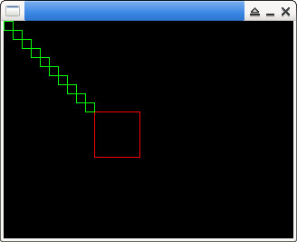

參考資訊：
https://github.com/piyushpandey013/ucGUI
main.c
#include "GUI.h"
int main(int argc, char *argv[])
{
int cc = 0;
GUI_RECT rt = { 0 };
GUI_Init();
GUI_SetColor(GUI_RED);
rt.x0 = 100;
rt.y0 = 100;
rt.x1 = 150;
rt.y1 = 150;
GUI_DrawRectEx(&rt);
GUI_SetColor(GUI_GREEN);
for (cc = 0; cc < 10; cc++) {
int t = cc * 10;
GUI_DrawRect(t, t, t + 10, t + 10);
}
GUI_Delay(3000);
return 0;
}
編譯、執行
$ gcc main.c -o main libucgui.a -IGUI_X -IGUI/Core -IGUI/Widget -IGUI/WM -lSDL $ ./main
